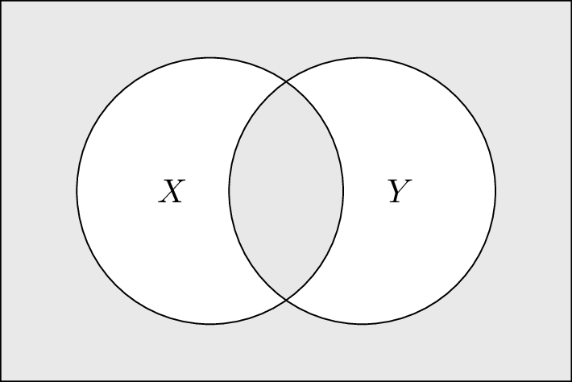

1 Argument, Validity & Proof
1.1 Reasoning about Reasoning
Logic, in the most general sense of the term, refers to the study of the norms that govern the activity of reasoning. In this broad sense, logic concerns not only the sort of reasoning expressed in mathematical proofs but also such reasoning as underwrites a statistical inference or the confirmation of a scientific theory. If we further countenance informal methods of reasoning, the scope of logic grows wider still, comprehending such rhetorical forms of argumentation as one might encounter in a philosophy text or a newspaper editorial and even those vague heuristics and patterns of inference summarized by the phrase “common sense”. Given such a wide scope of application, any introduction to logic must begin with a suitably delimited statement of its intended subject matter.
A more apt description of this course would be an ‘Introduction to Deductive Logic’, for our concern will not be with reasoning in general, but only with a very specific sort of reasoning, namely, the sort of reasoning which is termed deduction. To deduce something means to show that its truth follows necessarily from other claims that we take to be true, in brief, it is to prove it, in roughly the sense of proof with which we are all acquainted from our prior courses in mathematics. Thus, deductive reasoning is what we do when we derive a theorem in geometry from more basic claims, or axioms, characterizing elementary geometrical notions such as points, lines, planes, and the like. It is also what we do when we reason that a ‘7’ must belong in a certain empty square on a Sudoku board by ruling out all other possibilities, or when we conclude that Mary is right to say that John must be lying, when he says that both he and Mary have spoken truly. It is not what we do when we conclude (perhaps reasonably) that our lottery ticket will not make us rich, nor what Oedipus did when he solved (perhaps brilliantly) the riddle of the Sphinx. Reasoning, in the broad sense of the term, is surely at work in both of these cases, but in neither is anything deduced, in neither is anything proven to be true.
Now, in this course we will be studying the topic of deductive reasoning. In so doing, we will have many occasions ourselves to reason deductively. While reasoning about reasoning may seem to involve us in a circle, as long as we are careful, this circle need not be a vicious one. Indeed, if you continue on in your study of logic beyond this course, you will quickly come to discover that it is the essentially self-reflexive nature of logic which endows the subject not only with its peculiar charm, but also with no small part of its philosophical value. For, if logic is concerned to study reasoning and if, at the same time, its results are arrived at by means of reasoning, then one may meaningfully ask what follows when the claims established in the study of logic are applied to itself. The answer, as it turns out, is quite a lot! The essentially circular nature of logic is what enabled the discovery of such landmark results as Gödel’s famous incompleteness theorems, among the purported corrolaries of which are such provocative theses as “arithmetical truth cannot be defined arithmetically”, and “if a computer can simulate all of our mathematical reasonings, then, in principle, we cannot fully grasp how it works”.
But let’s not get ahead of ourselves! In order to reflect seriously on the philosophical import of such claims, one must first understand what exactly they mean, and, for this, we require a thorough understanding of the basic concepts of deductive logic. These are the concepts of argument, validity, and proof. In the remainder of this chapter, we will consider each of these concepts in turn, with an eye to understanding how it is that, in logic, we reason about reasoning.
1.2 Arguments
Logic seeks to investigate the norms that govern the activity of reasoning. It is thus concerned to investigate the general conditions under which reasoning leads to good—or, to use the logician’s preferred approbative, valid—arguments. As students of logic, we are thus confronted with a number of preliminary questions that must be answered before our inquiry can get going:
What exactly is an argument?
What does it mean for an argument to be valid?
What is reasoning and how is it involved in argumentation?
Let us begin with the first of these questions and think a bit about what an argument is and how we ought to represent arguments.
When we give an argument, we proceeds from certain claims that we take to be true. On the basis of these claims we conclude that something else is true. In logic, we refer to the claims from which an argument proceeds as the premises of that argument, and we refer to the claim to which we are led by an argument as its conclusion. If we write down the premises of an argument in a comma-separated list, and mark them off from the argument’s conclusion by a horizontal line, the following are all arguments:
\[ \frac{\textrm{All humans are mammals}\hspace{2mm},\hspace{2mm}\textrm{No mammals are cold-blooded}}{\textrm{No humans are cold-blooded}} \]
\[ \hspace{2mm} \]
\[ \frac{\textrm{Either the bus is late or Anna slept in}\hspace{2mm},\hspace{2mm}\textrm{When it does not rain, the bus arrives on time}\hspace{2mm},\hspace{2mm}\textrm{It is not raining}}{\textrm{Anna slept in}} \]
\[ \hspace{2mm} \]
\[ \frac{\textrm{Every student in the seminar recommended an article to the professor}}{\textrm{Some article was recommended to the professor by every student}} \]
Note that the first of these arguments has two premises, the second has three, and the third has one, but all of the arguments have a single conclusion. Also note that while the first two of these arguments are intuitively valid, the third is not.
Now, despite the fact that here we are using English formulations, it may be natural to regard the claims made in an argument as non-linguistic abstractions from the specific sentences that are used to express those claims in a particular language. Thus, for example, the first of the three arguments given above can be formulated in German as follows:
\[ \frac{\textrm{Alle Menschen sind Säugetiere}\hspace{2mm},\hspace{2mm}\textrm{Keine Säugetiere sind kaltblütig}}{\textrm{Keine Menschen sind kaltblütig}} \]
If this class were to be taught in German, and I were to have written this latter argument on the board in place of the first of the three arguments given above, then, presumably, despite the shift in language, I would have presented you with one and the same argument.
It is tempting, therefore, to think of arguments as being made up of claims, or thoughts, that can be equally well be expressed in any number of different languages. Nevertheless, for the purpose of representing arguments as objects about which we ourselves will be reasoning, it will be helpful to be more concrete and to disregard the intuitive difference between an argument in thought and its linguistic formulation. Thus, we will construe arguments as linguistic constructs. In other words, we will represent an argument by a particular collection of sentences expressed in a given language.
Will any sentence do to serve as the premise or conclusion of an argument? The grammatical concept of a sentence in English is that of a closed, self-contained linguistic unit including at least one independent clause. But sentences in English, thus understood, can serve a variety different functions. The four functional categories of sentences that usually appear in grammar textbooks are as follows:
- Declarative Sentences - A sentence that is used to declare or to assert something (“The class begins at noon.”)
- Interrogative Sentences - A sentence that is used to ask a question (“When does the class begin?”)
- Imperative Sentences - A sentence that is used to issue a command or a request. (“Please arrive to class on time.”)
- Exclamatory Sentences - A sentence that is used to express an attitude or state of mind. (“What an amazing lecture!”)
When we give an argument, we assert things, either so as to make it clear what our reasons are for accepting a conclusion, or else to make it clear what we are accepting on the basis of those reasons. Thus, questions, commands, and exclamations, in so far as they do not assert anything, cannot straightforwardly appear in arguments. If they occur in argumentative text, they usually have to be paraphrased into declarative form before the argument can be laid out clearly. For example, a text which begins with the question “Should we raise the minimum wage?”, and then goes on to answer this question in the negative is really giving an argument the conclusion of which is the declarative sentence “We should not raise the minimum wage”.
Thus, only declarative sentences can serve as the premises or conclusion of an argument. Let us now think a bit more carefully about what a declarative sentence is. As a first pass, we might think to define a declarative sentence as any sentence which can be used to make a claim about how the world is, or, what is actually the case. But what then should we make of the following sentences?
\[ \textrm{Either John or Mary was at the party.} \]
\[ \textrm{If the match is struck, it will light.} \]
In a sense, one might think that the first of these sentence does not really make a claim about the world, since it fails to specify whether it was John or Mary who, in fact, attended the party. The same can be said of the second sentence. It does not say what is the case, but only what would be the case (namely, that the match would light), on the condition that something else is the case (namely, that the match is struck). But, these sorts of claims should certainly be allowed to appear in arguments, as in:
\[ \frac{\textrm{Either John or Mary was at the party}\hspace{2mm},\hspace{2mm}\textrm{John stayed home}}{\textrm{Mary was the party}} \]
or
\[ \frac{\textrm{If the match is struck, it will light}\hspace{2mm},\hspace{2mm}\textrm{The match did not light}}{\textrm{The match was not struck}} \]
What allows these claims to figure in arguments is simply that they are the sort of claims which can be either true or false. Even if a declarative sentence is uninformative or hypothetical, it remains truth-evaluable. Thus, it remains either true or false that either John or Mary was at the party, and, likewise, it is either true or false that if the match is struck, it will light. So, we may take truth-evaluability to be our basic standard of which sentences can serve as the premises or conclusion of an argument.
Let us return now to the question of what language we ought to use to formulate our arguments. English seems a reasonable enough choice, given that it is the only language which can be safely assumed is spoken fluently by any participant in this course. Yet, at the same time, English (or any other natural language, for that matter) turns out not to be a particularly good choice. For the English language is exceedingly complex, and much of this complexity is simply unnecessary for capturing the differences in meaning that are relevant for formulating the particular arguments with which we will be concerned. For example, while there may be some subtle difference in meaning between the English sentences “John gave the letter to Mary” and “Mary was given the letter by John”, this difference in meaning, while relevant perhaps for producing a desired literary effect, is altogether irrelevant for judging whether or not it follows from this claim that, say, “Mary was given something by someone”. Consequently, to avoid overcomplicating things, if our sole aim is to study such inferential relations, we may as well do so in a language whose grammar ignores the distinction between active and passive voice constructions.
Or consider, again, the argument discussed earlier:
\[ \frac{\textrm{All humans are mammals}\hspace{2mm},\hspace{2mm}\textrm{No mammals are cold-blooded}}{\textrm{No humans are cold-blooded}} \]
The sentence “All humans are mammals” has any number of obviously equivalent formulations in English, for example:
- Every human is a mammal.
- Whatever is a human is a mammal.
- Anything that is a human is a mammal.
- If something is a human, then it is a mammal.
- Being a mammal is a property possessed by all humans.
From a logical perspective, the syntactic variation exhibited by these sentences is wholly irrelevant to their argumentative significance since all of these sentences are true under exactly the same conditions. Why, one might ask, does natural language allow so many synonymous forms, which from the perspective of logic seem entirely redundant? The answer, on reflection, is simple: a natural language, such as English, is not just a tool for reasoning, but serves many other purposes as well. Natural language has to support poetic effect, rhythm, emphasis, and stylistic variation, all of which require flexibility in its syntax, and it also has to support efficient reference in discourse, where shifting the subject or using anaphora can make communication smoother and less repetitive. In short, natural language is shaped not just by the demands of logic, but by the broader needs of expression, narrative, and efficient communication.
But the aim of this class is to study reasoning, and so, to avoid unnecessary complexity, we would do better to employ a language expressly designed for the sole purpose of representing certain argument forms. We might, for example, limit ourselves to a small fragment of English in which the only declarative sentences are those of the form:
- All \(A\)s are \(B\)s
- No \(A\)s are \(B\)s
- Some \(A\)s are \(B\)s
- Some \(A\)s are not \(B\)s
(Here \(A\) and \(B\) stand for terms—general noun phrases or adjectives—like ‘human’ or ‘cold-blooded’.) Or since we have departed from natural language already, we might simply go one step further, and formulate arguments in a wholly artificial language of our own invention, constructed exactly to suit our needs, and with a minimum of extraneous syntactic complexity. For instance, we might express the above four sentence forms as follows:
- All(\(A\), \(B\))
- No(\(A\), \(B\))
- Some(\(A\), \(B\))
- Some-not(\(A\), \(B\))
Or using an infix notation to avoid the need for commas and parentheses, we might simply write:
- \(A\textrm{\textbf{a}}B\)
- \(A\textrm{\textbf{n}}B\)
- \(A\textrm{\textbf{s}}B\)
- \(A\textrm{\textbf{sn}}B\)
At some point, the choice as to what syntax to adopt in our artificial, or formal, language is arbitrary. For example, the expressions \(\textrm{\textbf{a}}, \textrm{\textbf{n}}, \textrm{\textbf{s}}\), and \(\textrm{\textbf{sn}}\) here have merely mnemonic significance. We could just as well use any expressions we like, for example, the first four vowels of the English alphabet:
- \(A\textrm{\textbf{a}}B\)
- \(A\textrm{\textbf{e}}B\)
- \(A\textrm{\textbf{i}}B\)
- \(A\textrm{\textbf{o}}B\)
The advantage of this approach is that we are now able to state, in much more precise terms, what we mean by a sentence and thus by an argument.
Let us give a name to this toy language in which we will formulate arguments. We will call it L\(_S\). The language L\(_S\) has an alphabet consisting of two kinds of symbol:
Terms: \(\,\,t_1\), \(t_2\), \(t_3\), …
Copulas: \(\,\,\textbf{a}\), \(\textbf{e}\), \(\textbf{i}\), \(\textbf{o}\)
Let us call any finite string of symbols from this alphabet an expression of L\(_S\). Which expressions of L\(_S\) are sentences? We can now define the notion precisely.
Definition 1.1 A sentence of L\(_S\) is any expression of the form:
\[ A\!\ast\!B \]
where \(A\) and \(B\) are terms, and \(\ast\) is a copula.
Sentences, thus defined, are purely syntactic constructs. They are strings of symbols devoid of any meaning. Of course, our choice of the syntax for the language L\(_S\) was guided by semantic considerations. In other words, in devising our language, we had in mind a certain conception of how various linguistic items are to be interpreted and we chose our syntax so as to ensure that the sentences in the language consist only of expressions which, when given such an interpretation, express meaningful claims.
We now have a precise definition of a sentence, and we can use this definition to precisely define what we will mean by an argument in the language L\(_S\).
Definition 1.2 An argument in the language L\(_S\) consists of (1) a set of sentences of L\(_S\), whose members are referred to as the argument’s premises; and (2) a sentence of L\(_S\) referred to as the argument’s conclusion. We denote the argument whose premises comprise the set of sentences \(\Gamma\) and whose conclusion is the sentence \(\varphi\), as follows:
\[ \Gamma\vdash\varphi \]
The new symbol ‘\(\vdash\)’ introduced in this definitions is sometimes called the ‘single turnstile’. Don’t worry about it’s odd appearance; it is just a separator, like the horizontal line that we previously used to mark off the premises of an argument from its conclusion. Its only advantage over the horizontal line is that it allows us to typeset arguments in line.
As we shall see, the precision we gain from formulating arguments in a simple language like L\(_S\) has many advantages. But it also has its costs. The first is that we now have to ‘translate’ arguments expressed in ordinary language into L\(_S\) in order to apply the various tools that we will, in subsequent sections, develop to assess their validity. In some cases, this translation exercise may be straightforward. For example, the argument, letting \(A\) be a term that stands for ‘human’, \(B\) a term that stands for ‘mammal’, and \(C\) a term that stands for ‘cold-blooded’, the English argument:
\[ \frac{\textrm{All humans are mammals}\hspace{2mm},\hspace{2mm}\textrm{No mammals are cold-blooded}}{\textrm{No humans are cold-blooded}} \]
Can be rendered in L\(_S\) as:
\[ A\textrm{\textbf{a}}B, B\textrm{\textbf{e}}C\vdash A\textrm{\textbf{e}}C \]
Other arguments may prove more challenging. Suppose, for example, you are reading a philosophy text and you encounter the following passage:
All those who, in the full exercise of reflective self-command, choose to govern their appetites rather than be governed by them, are persons whose actions deserve praise; and every person whose actions deserve praise is, by that very fact, a person of admirable character. Therefore, some individuals who have not merely acted but acted under the discipline of reason are persons of admirable character.
Translating such a passage into L\(_S\) requires some thought, because the subject and predicate terms of the various claims are somewhat more complex and expressed in non-uniform ways. Still, it can be done. In this case, let:
\(A\): a person who has acted under the discipline of reason
\(B\): a person whose actions deserve praise
\(C\): a person of admirable character
Then, the argument can be translated into L\(_S\) as follows:
\[ A\textrm{\textbf{a}}B, B\textrm{\textbf{a}}C\vdash A\textrm{\textbf{i}}C \]
Exercise 1.1 Translate the following arguments into the language L\(_S\), indicating the meaning of all the terms appearing in your translation.
(a). Some students are athletes. All athletes are disciplined people. Therefore, some students are disciplined people.
(b). All dogs are mammals. No mammals are reptiles. Therefore, no dogs are reptiles.
(c). All birds are animals. Not all animals can fly. Therefore, some birds are flightless.
(d). Not all readers who prefer difficult texts are people who appreciate ambiguity. Neither are all people who appreciate ambiguity intellectually adventurous. Therefore, some readers who prefer difficult texts are not intellectually adventurous.
(e). No citizens who routinely ignore their civic duties are fit for public office, since all people fit for public office are persons of sound judgment, and no citizens who routinely ignore their civic duties are persons of sound judgment.
Apart from the challenges involved in translation, there is a second risk that we run in opting to formulate arguments in a simple language like L\(_S\). The risk is that this language may lack the expressive resources needed to represent the meaning of the various claims involved in an argument in a precise enough way to see why that argument is valid. Consider, for example, the following, seemingly valid argument:
\[ \frac{\textrm{Some students in the class are taller than Bob}\hspace{2mm},\hspace{2mm}\textrm{Bob is taller than Carla}}{\textrm{Some students in the class are taller than Carla}} \]
We might try to translate this into L\(_S\) as follows. Let:
\(A\) = a student in the class
\(B\) = a person identical to Bob
\(C\) = a person who is taller than Bob
\(D\) = a person who is taller than Carla
The argument can then be expressed:
\[ A\textrm{\textbf{i}}C, B\textrm{\textbf{a}}D\vdash A\textrm{\textbf{i}}D \]
This, as we shall see, is not a valid argument. The difficulty here is that the language L\(_S\) does not have the resources to express complex relational facts, like “Anyone who is taller than one who is taller than Carla, is taller than Carla.” To capture such facts, we will need a logic that is more expressive than L\(_S\). By the time we get to quantificational logic, we will have introduced such a language, and so will be able to formalize the above argument in a way which will allow us to see why it is valid. But will the same concerns arise for the formal language of quantificational logic? Will we have to be concerned that there are valid arguments expressible in English that cannot be seen as valid when translated into this formalism? In one important sense, the answer is no. In fact, it turns out that the language of quantificational logic that we will introduce later on in this course is reasonably comprehensive. Indeed, among the many impressive achievements of the landmark logical investigations into the foundations of mathematics conducted in the first half of the 20th century was the discovery that the language of quantificational logic is sufficient to comprehend all but a small fraction of the arguments that have ever been given in mathematics!
Having now addressed the question of what an argument is and how arguments will be represented in our study of logic, our next task is to inquire into what it means for an argument to be valid? Before taking up this task, however, let us pause to introduce a notion that will be central to our later discussions (and, indeed, that already appears surreptitiously in our definition of an argument), namely, that of a set.
1.3 Sets
1.3.1 Representing Sets
Sets are among the items adverted to most frequently in logical reasoning, and so it is crucial to become acquainted with the terminology and notation that is typically used to reason with and about them.
A set is a collection of objects. The most literal way to represent a set is to enclose a comma-separated list of the objects belonging to the set between curly braces. Thus, for example, the set of odd numbers between 1 and 10 may be written:
\[ \{1,3,5,7,9\} \]
The order of a list does not affect the set of objects appearing it. Nor do repetitions of those objects. Hence, the above set can also be written:
\[ \{7,3,5,1,7,5,1,9,9,9,7,5\} \]
To say that the object \(a\) belongs to the set \(X\), we write \(a\in X\) (read: ‘\(a\) is in \(X\)’ or ‘\(a\) is a member of \(X\)’). To say that \(a\) does not belong to \(X\), we write \(a\not\in X\).
Nearly every set that we will have any occasion to reference in this course will be most clearly defined not by means of a comprehensive listing of its members but rather by specifying a property possessed by all and only the members of this set. Thus, for instance, we may have occasion to refer to the set of all prime numbers, or the set of all expressions in a language of length greater than \(12\).
To denote the set of all and only those objects which possess the property \(P\), we write: \[ \{x: P(x)\} \] where ‘\(P(x)\)’ is any statement expressing the fact that \(x\) has the property \(P\). This description of the set is read: ‘the set of all \(x\), such that \(P(x)\)’. So, for example, if we wish to refer to the set of all odd, natural numbers between 1 and 10, we could write:
\[ \{n: n\textrm{ is an odd natural number and }1\leq n\leq 10\} \]
When we wish to restrict the members of a set to only those items belonging to the set \(X\), this fact can be indicated by writing \(x\in X\) on the left-hand side of the colon. The condition described as applying to \(x\) appearing on the right-hand side of the colon is that which must hold of any member of \(X\) in order for it to be included in the set. So, for example, if \(\mathbb{N}\) is the set of all natural numbers, then the above set may be written:
\[ \{n\in \mathbb{N}: n \textrm{ is odd and }1\leq n\leq 10\} \]
If it is clear from the context from what set of objects the members of a defined set are to be drawn, then we may omit any explicit reference to the containing set. Thus, for example, if it is clear from the context that we are defining a set of natural numbers, then, for the above set, we may simply write:
\[ \{n: n \textrm{ is odd and }1\leq n\leq 10\} \]
Sometimes it is convenient to represent a set as that which results from applying a function to the members of another set. To refer to the set which results from applying the function \(f\) to the members of the set consisting of all and only the objects possessing the property \(P\), we write:
\[ \{f(x): P(x)\} \]
Hence, the set of all odd natural numbers between \(1\) and \(10\) may also be written:
\[ \{2n+1: 0\leq n\leq 4\} \]
Note that there is nothing to prevent a set from having other sets among its members—nor is there anything wrong with a set of sets of sets, or a set of sets of sets of sets, etc.
Exercise 1.2 Let \(S\) be the set of all sets which are not members of themselves, i.e.:
\[ S = \{X: X\textrm{ is a set and }X\not\in X\} \]
Explain why the set \(S\) cannot exist by asking whether \(S\) is a member of itself.1
Exercise 1.3 Let \(S = \{2, 4, 8, 16, 32\}\). Fill in the blanks, assuming that all sets are sets of natural numbers:
(a). \(S = \{4, 4, 2, 16, 32, 2, 4, \,\underline{\hspace{0.5cm}}\,\}\)
(b). \(S \subset \{2n: 1 \leq n < \,\underline{\hspace{0.5cm}}\,\}\)
(c). \(\{n: 1\leq n\leq 5\} = \{\,\underline{\hspace{1cm}}\,: n\in S\}\)
(d). \(S = \{\,\underline{\hspace{1cm}}\,: 1\leq n \leq 5\}\)
1.3.2 Set Relations and Operations
Two sets \(X\) and \(Y\) are equal, written \(X=Y\), if \(X\) and \(Y\) have exactly the same members, i.e., \(a\in X\) iff \(a\in Y\), for any object \(a\). The set \(X\) is a subset of the set \(Y\), written \(X\subset Y\), if every member of \(X\) is a member of \(Y\). So, for example:
\[ \{1,5,7\}\subset \{1,3,5,7,9\}. \]
Note that this implies that every set is a subset of itself, i.e., \(X\subset X\), for any set \(X\). When we need to indicate that \(X\subset Y\) but that \(X\neq Y\), we say that \(X\) is a ‘proper’ subset of \(Y\).2
Two sets are equal just in case they have exactly the same members. Thus, two sets are equal just in case each is a subset of the other, and one often proves the equality of two sets \(X\) and \(Y\), by first showing \(X\subset Y\) and then showing \(Y\subset X\).
One will often encounter multiple statements of set inclusion ‘chained’ together, as in:
\[ X_1\subset X_2\subset \cdots \subset X_k \]
This means that \(X_1\subset X_2\), \(X_2\subset X_3\), etc. Since, however, the subset relation is a transitive relation (i.e., for any sets \(X,Y,Z\), if \(X\subset Y\) and \(Y\subset Z\), then \(X\subset Z\)), these statements of inclusion are together equivalent to the claim that \(X_i\subset X_j\), whenever \(1\leq i\leq j\leq k\).
The union of the two sets \(X\) and \(Y\) is given by:
\[ X\cup Y= \{x: x\in X \textrm{ or }x\in Y\}. \]
The intersection of \(X\) and \(Y\) is given by:
\[ X\cap Y=\{x: x\in X\textrm{ and }x\in Y\}. \]
And the complement of \(X\) relative to \(Y\) is given by:
\[ Y-X=\{x\in Y: x\not \in X\} \]
In many contexts, there will exist some ‘universal’ set of which all the sets referred to in the discussion are assumed to be subsets. For instance, in a given context, we may only be concerned to discuss sets of natural numbers. If \(\Omega\) refers to this universal set, we write \(X^c\) in place of \(\Omega-X\), and refer to this set simply as the complement of \(X\):
\[ X^c=\{x\in \Omega: x\not\in X\} \]
The Venn diagrams in Figure 1.1 can help to visualize the effect of performing these set operations:

Exercise 1.4 Prove the following claims:
(a). If \(X\subset Y\), then \(X\cup Z\subset Y\cup Z\).
(b). \(X\subset Y\) iff \(X = X\cap Y\)
(c). \(X\subset Y^c\) iff \(Y\subset X^c\)
(d). \(X\cup(Y-X) = X\cup Y\)
(e). \(X\cap(Y\cup Z) = (X\cap Y)\cup(X\cap Z)\)
(f). \(X\cap Y = (X^c\cup Y^c)^c\)
Exercise 1.5 Name the sets whose members consist of all and only those items in the shaded regions of the following Venn diagrams:
(a).

(b).

(c).

Since the result of applying the operations of union and intersection to multiple sets does not depend on the order in which the operations are performed, there is no need to employ parentheses to determine the order of operations when expressing such sets. So, for example, without any threat of ambiguity, the union of the sets \(X_1,\ldots,X_n\) can be written:
\[ X_1\cup X_2\cup\cdots\cup X_n \]
When there is an obvious way of indexing the operand sets, we will sometimes express the union using a larger version of the operator, as follows:
\[ \bigcup_{i=1}^n X_i \]
and similarly for intersections, using the symbol \(\bigcap\).
Exercise 1.6 Let \(X\) be any subset of \(\Omega\) and let \(\mathbf{1}_X\) be the function which maps every item in \(\Omega\) to either \(0\) or \(1\) as follows:
\[ \mathbf{1}_X(x) = \left\{\begin{array}{ll} 1 & \textrm{if } x\in X \\ 0 & \textrm{if } x\not\in X \end{array}\right. \]
Let \(X\) and \(Y\) be any two subsets of \(\Omega\). Express the functions \(\mathbf{1}_{X\cap Y}\), \(\mathbf{1}_{X\cup Y}\), and \(\mathbf{1}_{X-Y}\) in terms of \(\mathbf{1}_X\) and \(\mathbf{1}_Y\).
1.3.3 The Empty Set
We would like the set-theoretic operations defined above to always yield well-defined sets. But what is the intersection of two sets that have no members in common? To give this question a definite answer, it will be convenient to assume that there exists a unique set which has no members. We will denote this set by \(\emptyset\) and refer to it as the empty set. The two defining characteristics of the empty set are as follows:
- For every property \(P\), it is (vacuously) true that, for all \(x\in\emptyset\), \(x\) has the property \(P\).
- For every property \(P\), it is (vacuously) false that, for some \(x\in\emptyset\), \(x\) has the property \(P\).
Note that from the first condition, it follows that, for any set \(X\), \(\emptyset\subset X\). To see this, let \(P\) be the property possessed by all and only those \(x\) such that \(x\in X\). From the second condition it follows that no object is a member of \(\emptyset\). To see this, consider any object \(a\), and let \(P\) be the property possessed by all and only those \(x\) such that \(x=a\).
Exercise 1.7 The power set of the set \(X\), written \(P(X)\), is the set of all subsets of \(X\), i.e.: \[ P(X) = \{Y: Y\subset X\} \]
(a). Let \(S = \{1, 2, 3, 4, 5, 6, 7\}\). How many members does \(P(S)\) have?
(b). How many members does \(P(P(S))\) have?
(c). How many members does the power set of the empty set have?
1.4 Validity
1.4.1 Necessary Truth Preservation
We have now seen how arguments can be represented as collections of sentences in a formal language. The next task that we face is to formulate a precise standard of argumentative validity. As a first step, it will be helpful to consider what we mean when we say that an argument is valid. Consider again the following argument:
\[ \frac{\textrm{All humans are mammals}\hspace{2mm},\hspace{2mm}\textrm{No mammals are cold-blooded}}{\textrm{No humans are cold-blooded}} \]
Intuitively this is a valid argument. But what about this argument makes it valid? One answer that readily comes to mind is that the argument is valid because its conclusion follows necessarily from its premises. Or, in other words, it is valid because the truth of its premises necessitates that of its conclusion.
Let us try to formulate this conception of validity in sharper terms, by making precise the notion of necessary truth preservation in a formal language of the sort discussed in the previous section.
Definition 1.3 We refer to the objects \(\mathbf{T}\) and \(\mathbf{F}\) as truth values. A truth valuation of a formal language \(L\) is any assignment of truth values to the sentences of \(L\).
Let \(v\) be a truth valuation of the language \(L\). To indicate that \(v\) assigns the truth value \(\mathbf{T}\) to the sentence \(\varphi\), we write \(v(\varphi)=\mathbf{T}\). In this case, we will sometimes say that ‘\(\varphi\) is true under the truth valuation \(v\)’. To indicate that \(v\) assigns the truth value \(\mathbf{F}\) to the sentence \(\varphi\), we write \(v(\varphi)=\mathbf{F}\), and say that ‘\(\varphi\) is false under the truth valuation \(v\)’.
What are these mysterious objects \(\mathbf{T}\) and \(\mathbf{F}\) which somehow manage to convey truth and falsehood to a sentence simply in virtue of their being assigned to it by a truth valuation? Metaphysically, this may seem an interesting question, but for the purpose of giving a precise definition of argumentative validity, it doesn’t really matter. All that matters for this purpose is that \(\mathbf{T}\) are \(\mathbf{F}\) are distinct items, and that these two distinct items are the only two truth values that a sentence can be assigned.3 They may just as well be thought of as the letters ‘\(\mathbf{T}\)’ and ‘\(\mathbf{F}\)’ themselves, for apart from their obvious mnemonic value any two distinct items would suffice in their place.
When we assert that an argument is valid, we will always do so relative to a certain set of admissible, or possible, truth valuations. That the truth of an argument’s premises necessitate that of its conclusion will then correspond to the fact that for every possible truth valuation, if all the premises of the argument are true under that valuation, the conclusion is true under that valuation as well. Let us try to write this definition down more precisely.
Definition 1.4 Let \(V\) be a set of truth valuations. The argument
\[ \Gamma\vdash\varphi \]
is valid with respect to \(V\) if, for every truth valuation \(v\in V\), the following is true: if \(v(\psi)=\mathbf{T}\), for all \(\psi\in\Gamma\), then \(v(\varphi)=\mathbf{T}\).
To indicate that the argument \(\Gamma\vdash\varphi\) is valid with respect to \(V\), we write:
\[ \Gamma\models_V\varphi \]
The symbol ‘\(\models\)’ is sometimes referred to as the double turnstile.
Exercise 1.8 Let \(\varphi,\psi\), and \(\chi\) be distinct sentences. Add truth values to the following table:
to specify a two-member set of truth-valuations \(V=\{v_1,v_2\}\) with respect to which the following three claims are all true:
- \(\varphi,\psi\models_V\chi\)
- \(\varphi\not\models_V\chi\)
- \(\psi\not\models_V\chi\)
It may seem that the above definition of argumentative validity is sufficiently abstract that nothing of substance can be inferred from it about which arguments are valid and which are not. This, however, is not so. Already, the characterization of argumentative validity as necessary truth preservation implies a number of substantive facts. Here is one such fact. For any set of sentences \(\Gamma\) and any sentence \(\varphi\):
\[ \Gamma,\varphi\models_V\varphi \]
What this means is that any argument whose conclusion appears among its premises is valid. Since \(\varphi\in\Gamma\cup\{\varphi\}\), any truth valuation in \(V\) under which all of the sentences in \(\Gamma\cup\{\varphi\}\) are true is one in which \(\varphi\) is true as well. But, this is just what it means to say the argument is valid.
Another fact that follows from our definition of validity is that if we add premises to a valid argument,the validity of the argument remains unchanged. This can be expressed, in formal terms, as follows:
\[ \textrm{If $\Gamma\models_V\varphi$, then $\Gamma, \Delta\models_V\varphi$.} \]
Suppose \(\Gamma\models_V\varphi\) and let \(v\in V\) be a truth valuation such that \(v(\psi)=\mathbf{T}\) for all \(\psi\in \Gamma\cup\Delta\). Since \(\Gamma\subset\Gamma\cup\Delta\) it follows that \(v(\psi)=\mathbf{T}\) for all \(\psi\in \Gamma\). So, since \(\Gamma\models_V\varphi\), we have \(v(\varphi)=\mathbf{T}\). Hence, any valuation in \(V\) under which all of the sentences in \(\Gamma\cup\Delta\) are true is one in which \(\varphi\) is true. In other words, \(\Gamma,\Delta\models_V\varphi\).
Exercise 1.9 Let \(\Gamma\) and \(\Delta\) be any sets of sentences and let \(\varphi\) and \(\psi\) be any sentences. Show that the following is true:
\[ \textrm{If $\Gamma,\varphi\models_V\psi$ and $\Delta\models_V\varphi$, then $\Gamma,\Delta\models_V\psi$.} \]
Are these facts about validity reasonable? Should a patently circular argument such as:
\[ \frac{\textrm{Socrates is Greek}}{\textrm{Socrates is Greek}} \]
really be counted as valid? Should the validity of an argument really be preserved under the arbitrary addition of new premises? What if the added premises are irrelevant to the truth of the conclusion at hand, as is the case, for example, in the following argument:
\[ \frac{\textrm{Socrates is a human\hspace{2mm},\hspace{2mm}All humans are animals}\hspace{2mm},\hspace{2mm} 2+2=4}{\textrm{Socrates is an animal}} \]
Should this argument be counted as valid? These are interesting questions. For now, we only note that they are definitively answered in the affirmative by the view of validity which conceives of it as nothing more than necessary truth preservation.
So far, we have only defined validity relative to a set of truth valuations. This begs the question as to which truth valuations we should count as admissible for the purpose of assessing the validity of arguments?
Before addressing this question, let’s first go back to our definition of validity and think about it in a slightly different way. That definition said that an argument is valid iff every admissible truth valuation under which all of the premises of the argument are true is one in which the conclusion is true as well. Note that a perfectly equivalent way of formulating this definition is as follows: An argument is invalid iff there is some admissible truth valuation with respect to which all of the premises are true but the conclusion is false.
It is often more intuitive to think about validity in this way. We invalidate an argument by finding a counterexample to it. A counterexample is just an admissible truth valuation that makes the premises true and the conclusion false. Consequently, when we increase the class of admissible truth valuations we make it easier to find a counterexample, and so easier to invalidate an argument. This means that fewer arguments will be valid. On the other hand, when we decrease the class of admissible truth valuations we make it harder to find a counterexample, and so harder to invalidate an argument. This means that more arguments will be valid.
So, to return to the question of which truth valuations we should count as admissible, a natural answer, one might think, is that we should consider all possible assignments of truth and falsehood to the sentences of our language. This, after all, would correspond to the strictest possible standard of validity—and what could be stricter than logic?
To adopt this approach, however, will not do, for the reason indicated by the following theorem:
Theorem 1.1 Let \(V\) be the set of all possible truth valuations. Then \(\Gamma\models_V \varphi\) if and only if \(\varphi\in\Gamma\).
Proof. The right-to-left direction (or, the ‘if’ direction) of the claim follows, as we have seen, from the definition of validity which entails that any circular argument is valid. For the left-to-right direction (or, the ‘only if’ direction) of the claim, suppose that \(\varphi\not\in\Gamma\). Then, since \(V\) consists of all possible truth valuations, there exists some truth valuation in \(V\) under which all of the sentences in \(\Gamma\) are true but the sentence \(\varphi\) is false. Hence, \(\Gamma\not\models_V\varphi\).
This theorem asserts that an argument is valid with respect to the set of all truth valuations of a language if and only if its conclusion appears among its premises. Consequently, without somehow restricting the class of admissible valuations, we are left with a trivial standard of argumentative validity in which the only valid arguments are circular ones! This, of course, will not do. How then are we to restrict the class of admissible truth valuations in a nonarbitrary way? To answer this question, we must examine in more detail the specifically logical sense of necessity involved in claims of argumentative validity.
1.4.2 Logical Necessity
Let us return to the argument:
\[ \frac{\textrm{All humans are mammals}\hspace{2mm},\hspace{2mm}\textrm{No mammals are cold-blooded}}{\textrm{No humans are cold-blooded}} \]
As we have said, this argument is valid in virtue of the fact that the truth of its premises necessitate the truth of its conclusion. But, in what exact sense of ‘necessity’ does the fact that no humans are cold-blooded necessarily follow from the two claims that all humans are mammals and no mammals are cold-blooded.
In general, when we say of a claim that it is necessarily true we assert not only that it is true but, moreover, that its truth is not a contingent, or incidental, matter. Its truth, in other words, is, in some sense, robust— it is independent of certain features of the context in which it is affirmed. The precise sense of necessity is determined by which particular features of the context are deemed incidental to the truth of the claim in question. For example, to assert that the Sun always rises in the east, is to assert not only that the Sun will rise in the east (today) but, moreover, that this claim would be true regardless of the specific day on which it is put forward. Hence, the sun’s rising in the east is a temporal (or, more specifically, a diurnal, or daily) necessity. Likewise, to assert that you are forbidden from castling when your king is in check, is not only to assert that you cannot castle from some one particular arrangement of the pieces in which a check has been made, but that the same prohibition remains in force in any such scenario that may arise in a game of chess. Hence, the disallowance of castling out of check is a deontic, or rule-based, necessity.4
What, then, are we to make of logical necessity? When we say that it is necessarily the case that if the premises of the above argument are true, so too is its conclusion, not only do we assert the truth of the following conditional:
(P): If ‘All humans are mammals’ and ‘No humans are cold-blooded’ are true, then ‘No humans are cold-blooded’ is true.
we further assert that this conditional, P, would be true regardless of certain features of the context in which it is here affirmed. What features of the context do we have it in mind to ignore as irrelevant when we describe P as logically necessary? Presumably what is meant by this is that P would remain true no matter what properties are designated by the terms ‘human’, ‘mammal’, and ‘cold-blooded’. Thus, for example, if the term ‘human’ were to refer to the property of being German, the term ‘mammal’ to the property of being near-sighted, and the term ‘cold-blooded’ to the property of being a good logician, it would still follow from the truth of the sentences ‘All humans are mammals’ and ‘No mammals are cold-blooded’, that the sentence ‘No humans are cold-blooded’ is true. For: if all Germans are near-sighted, and nobody who is near-sighted is a good logician, then no German is a good logician—not even Kurt Gödel!
Note that it is crucial to this line of reasoning that the constructs ‘All \(\cdots\) are \(\,\underline{\hspace{0.5cm}}\,\)’ and ‘No \(\cdots\) are \(\,\underline{\hspace{0.5cm}}\,\)’ are taken to possess their usual meaning, i.e., the former asserts that all objects possessing the property designated by ‘\(\cdots\)’ also possess the property designated by ‘\(\,\underline{\hspace{0.5cm}}\,\)’, and the latter asserts that no object possessing the property designated by ‘\(\cdots\)’ possesses the property designated by ‘\(\,\underline{\hspace{0.5cm}}\,\)’. If the meanings of these constructs were allowed to vary along with those of ‘human’, ‘mammal’, and ‘cold-blooded’ (e.g., if ‘All \(\cdots\) are \(\,\underline{\hspace{0.5cm}}\,\)’ were taken to mean that only some \(\cdots\)’s are \(\,\underline{\hspace{0.5cm}}\,\)’s) then there may be ways of interpreting the premises and conclusion of the argument according to which the premises are true but the conclusion false.
As this example illustrates, when we assess the validity of an argument we always take for granted a distinction between those elements of the language that are taken to have a fixed meaning for the purpose of this assessment and those elements of the language which are subject to reinterpretation and whose meanings are allowed to vary. We refer to the former as the logical elements of the language and to the latter as its non-logical elements. To say that an argument is valid is to assert that, under the assumption that the logical elements of the language are given their usual meaning, the truth of the argument’s conclusion follows from the truth of its premises no matter how the non-logical elements of the language are interpreted. The sense of necessity implicated in claims of validity is thus a kind of semantic necessity—it is truth in sole virtue of the meanings of the logical elements of the language.
To make this standard of validity more precise there are three things that we need to do:
- First, we must distinguish between the logical and non-logical elements of the language.
- Second, we must describe what it means to interpret the non-logical elements of the language.
- Third, we must describe how, on a given interpretation, the logical elements of the language determine the truth or falsehood of every sentence.
To perform these three tasks is referred to as giving a semantics for the language. The semantics for a formal language will vary from one language to the next, so at this point it will be best to consider a concrete example. In the next section we will therefore introduce a semantics for our formal language L\(_S\).
1.4.3 Extensional Semantics for L\(_S\)
Recall that the language L\(_S\) countenances four distinct sentence forms:
\[ \begin{align*} A\textrm{\textbf{a}}B &\qquad\qquad(\textrm{All $A$s are $B$s})\\ A\textrm{\textbf{e}}B &\qquad\qquad(\textrm{No $A$s are $B$s})\\ A\textrm{\textbf{i}}B &\qquad\qquad(\textrm{Some $A$s is $B$s})\\ A\textrm{\textbf{o}}B &\qquad\qquad(\textrm{Some $A$s are not $B$s})\\ \end{align*} \]
Which are the logical and which the non-logical elements of the language? As suggested above, the non-logical elements of the language are the terms. Their meanings will be allowed to vary from one interpretation to the next.
But what does it means to interpret these terms? Here we will adopt the approach of interpreting the terms ‘extensionally’. Terms in the language L\(_S\) are meant to stand for properties expressed by common noun phrases, such as ‘animal’, ‘cold-blooded’, or ‘green’. The extension of a common noun phrase is the set of all individual objects that possess the property denoted by that phrase. So, for example, the extension of the term ‘cat’ is the set of all cats, the extension of ‘cold-blooded’ the set of all cold-blooded creatures.5 Thus, in an extensional semantics, a term will be interpreted as a set of objects, the members of which are all and only those objects possessing the property denoted by the term.
But what exactly do we mean by an object? For semantics purposes, we need not specify what an object is. An object is simply a member of a certain fixed set which we will refer to as the ‘universe’ and which we will denote by \(\Omega\). We may assume that \(\Omega\) is very big, we may even assume that it is infinite. This universe of objects will serve as the background domain for our interpretations.
To interpret the language is simply to assign to every term an extension, that is, a subset of objects in the universe.
Definition 1.5 An interpretation of the language \(L_{\mathbf{S}}\) is a function assigning to each term a subset of \(\Omega\). If \(\sigma\) is an interpretation and \(A\) is a term, we write \(\sigma(A)\) for the subset of \(\Omega\) assigned to \(A\) by the interpretation \(\sigma\).
On any given interpretation of the language, every term is assigned a specific extension, that is, a specific set of objects in the universe. To complete our specification of the semantics for the language we must explain how it is that the truth or falsity of any sentence in the language, gets decided on a given interpretation. In doing so, we will, in effect, be providing an account of the intended meanings of the logical elements of the syntax, in this case the copulas \(\textrm{\textbf{a}}, \textrm{\textbf{e}}, \textrm{\textbf{i}}\), and \(\textrm{\textbf{o}}\).
How then do we go from an interpretation of the language, say \(\sigma\), to a specific truth valuation of the language, call it \(v^\sigma\). Let’s start with sentences of the form \(A\textrm{\textbf{a}}B\). On the intepretation \(\sigma\), the extension of \(A\) is given by the set \(\sigma(A)\) and the extension of \(B\) by the set \(\sigma(B)\). Under what conditions should the sentence \(A\textrm{\textbf{a}}B\) be judged to be true? Since \(A\textrm{\textbf{a}}B\) is intended to express the fact that all \(A\)s are \(B\)s, \(A\textrm{\textbf{a}}B\) should be true just in case every object in \(\sigma(A)\) is in \(\sigma(B)\). That is:
\[ \textrm{$v^\sigma(A\textrm{\textbf{a}}B)=\mathbf{T}$ iff $\sigma(A)\subset \sigma(B)$} \]
What about sentences of the form \(A\textrm{\textbf{e}}B\)? This sentence is meant to express the fact that no \(A\)s are \(B\)s and so it should be true, on the interpretation \(\sigma\), just in case \(\sigma(A)\) and \(\sigma(B)\) do not overlap, i.e.:
\[ \textrm{$v^\sigma(A\textrm{\textbf{e}}B) = \mathbf{T}$ iff $\sigma(A)\cap\sigma(B)=\emptyset$} \]
The corresponding rules explaining how to assess the truth and falsity of sentences of the form \(A\textrm{\textbf{i}}B\) and \(A\textrm{\textbf{o}}B\) can be stated as follows:
\[ \textrm{$v^\sigma(A\textrm{\textbf{i}}B) = \mathbf{T}$ iff $\sigma(A)\cap\sigma(B) \neq \emptyset$} \]
\[ \textrm{$v^\sigma(A\textrm{\textbf{o}}B) = \mathbf{T}$ iff $\sigma(A)-\sigma(B)\neq \emptyset$} \]
To illustrate the application of these semantic rules, let \(\sigma\) be the intepretation partially specified in Figure 1.2 above. On this interpretation, we have, for example:
\[ \begin{align*} v^\sigma(D\textrm{\textbf{a}}C)=\mathbf{T}\\ v^\sigma(A\textrm{\textbf{i}}B)=\mathbf{F}\\ v^\sigma(C\textrm{\textbf{e}}A)=\mathbf{F}\\ v^\sigma(D\textrm{\textbf{o}}B)=\mathbf{T} \end{align*} \]
Now, let’s return to the issue of argumentative validity. We had previously defined a valid argument as one for which there is no admissible truth valuation under which all of the premises are true but the conclusion is false. Now we are in a position to answer the question of what counts as an admissible truth valuation.
The class of admissible truth valuations with respect to which we will assess the validity of arguments will be those of the form \(v^\sigma\), where \(\sigma\) is an intepretation of the language. In other words, an admissible truth valuation is one which results from the application of the semantic rules to a specific assignment of extensions to the terms. We can now update our definition of argumentative validity as follows:
Definition 1.6 The argument
\[ \Gamma\vdash\varphi \]
is valid if, for every interpretation \(\sigma\), the following is true: if \(v^\sigma(\psi)=\mathbf{T}\), for all \(\psi\in\Gamma\), then \(v^\sigma(\varphi)=\mathbf{T}\).
To express that the argument \(\Gamma\vdash\varphi\) is valid, we write:
\[ \Gamma\models\varphi \]
In this case, we may also say that \(\Gamma\) entails \(\varphi\), or that \(\varphi\) is a logical consequence of \(\Gamma\).
In general, the semantic rules for the language—which capture the meanings of the logical elements of the language—will be chosen in such a way that not every truth valuation will be of the form \(v^\sigma\). Hence, it is these semantic rules that will render our standard of validity nontrivial, in the sense that it will admit as valid not just circular arguments. In the case of L\(_S\), for example, we may observe that there is no admissible truth valuation which assigns \(\mathbf{T}\) to both the sentences \(A\textrm{\textbf{a}}B\) and \(A\textrm{\textbf{o}}B\). To see why, let \(\sigma\) be any interpretation of the language and suppose that \(v^\sigma(A\textrm{\textbf{a}}B)=\mathbf{T}\). Then, by our semantic rule for the \(\textrm{\textbf{a}}\) copula, we have \(\sigma(A)\subset\sigma(B)\). But then \(\sigma(A)-\sigma(B)=\emptyset\), and so, by our semantic rule for the \(\textrm{\textbf{o}}\) copula, \(v^\sigma(A\textrm{\textbf{o}}B)=\mathbf{F}\).
Thus, on our extensional semantics \(A\textrm{\textbf{a}}B\) and \(A\textrm{\textbf{o}}B\) cannot both be true. In fact, it is easy to verify that they also cannot both be false. In other words, the one is true just in case the other is false. And the same relation obtains between the propositions \(A\textrm{\textbf{e}}B\) and \(A\textrm{\textbf{i}}B\)
Exercise 1.10
Show that, for any interpretation, the sentences \(A\textrm{\textbf{a}}B\) and \(A\textrm{\textbf{o}}B\) cannot both be false.
Show that, for any interpretation, the sentence \(A\textrm{\textbf{e}}B\) is true iff the sentence \(A\textrm{\textbf{i}}B\) is false.
Is there an interpretation on which \(A\textrm{\textbf{a}}B\) and \(A\textrm{\textbf{e}}B\) are both false? Explain your answer.
Now, at last, we have in place the necessary resources to make precise our initial, somewhat vague intuition that the following argument is valid:
\[ \frac{\textrm{All humans are mammals}\hspace{2mm},\hspace{2mm}\textrm{No mammals are cold-blooded}}{\textrm{No humans are cold-blooded}} \]
Let \(A\) stand for ‘human’, \(B\) for ‘mammal’ and \(C\) for ‘cold-blooded’. Then, translated into our formal language L\(_S\), the claim that this argument is valid is expressed:
\[ A\textrm{\textbf{a}}B, B\textrm{\textbf{e}}C\models A\textrm{\textbf{e}}C \]
To confirm this, we must show that, for any interpretation, if the premises are true, the conclusion is true as well. Let \(\sigma\) be an interpretation such that \(v^\sigma(A\textrm{\textbf{a}}B) = \mathbf{T}\) and \(v^\sigma(B\textrm{\textbf{e}}C)=\mathbf{T}\). Then, from the first of these claims, we have \(\sigma(A)\subset\sigma(B)\), and, from the second, we have \(\sigma(B)\cap\sigma(C)=\emptyset\). Now, suppose \(x\in\sigma(A)\). Then, since \(\sigma(A)\subset\sigma(B)\), \(x\in \sigma(B)\). But since \(\sigma(B)\cap\sigma(C)=\emptyset\), it follows that \(x\not\in\sigma(C)\). So, for any object \(x\), if \(x\in\sigma(A)\) it follows that \(x\not\in\sigma(C)\). But this means that \(\sigma(A)\cap\sigma(C)=\emptyset\). So, by our semantic rules, \(v^\sigma(A\textrm{\textbf{e}}C)=\mathbf{T}\). Hence, the argument is valid.
Now, let’s consider another argument:
\[ \frac{\textrm{No humans are mammals}\hspace{2mm},\hspace{2mm}\textrm{All mammals are cold-blooded}}{\textrm{No humans are cold-blooded}} \]
This argument can be formalized in the language L\(_S\) as follows: \(A\textrm{\textbf{e}}B, B\textrm{\textbf{a}}C\vdash A\textrm{\textbf{e}}C\). Is this argument valid? To show that it is not valid it suffices to provide a counterexample to the argument. This is an interpretation under which the premises are true but the conclusion is false. Let \(a\), \(b\), and \(c\) be any three distinct objects in \(\Omega\), and let \(\sigma\) be an interpretation satisfying:
\[ \sigma(A) = \{a, b\} \]
\[ \sigma(B) = \{c\} \]
\[ \sigma(C) = \{b, c\} \]
It is easy to verify that the interpretation \(\sigma\) is a counterexample to the argument, for, on this interpretation, the premises of the argument are true and its conclusion is false:
\[ \sigma(A)\cap\sigma(B) = \{a, b\}\cap\{c\} = \emptyset \hspace{3mm}\Rightarrow\hspace{3mm} v^\sigma(A\textrm{\textbf{e}}B) = \mathbf{T} \]
\[ \sigma(B) = \{c\} \subset \{b,c\} = \sigma(C) \hspace{3mm}\Rightarrow\hspace{3mm} v^\sigma(B\textrm{\textbf{a}}C) = \mathbf{T} \]
\[ \sigma(A)\cap\sigma(C) = \{a, b\}\cap\{b, c\} \neq \emptyset \hspace{3mm}\Rightarrow\hspace{3mm} v^\sigma(A\textrm{\textbf{e}}C) = \mathbf{F} \]
We can visually represent this counterexample as follows:
Exercise 1.11 Establish the truth of the following claims by either showing that the corresponding argument is valid or by providing a counterexample to show that it is invalid:
\(B\textrm{\textbf{i}}A, B\textrm{\textbf{a}}C\models A\textrm{\textbf{i}}C\)
\(B\textrm{\textbf{e}}A, B\textrm{\textbf{i}}C\models A\textrm{\textbf{o}}C\)
\(A\textrm{\textbf{a}}B, A\textrm{\textbf{o}}B\models A\textrm{\textbf{i}}C\)
\(A\textrm{\textbf{a}}B, C\textrm{\textbf{a}}B, B\textrm{\textbf{a}}D \models A\textrm{\textbf{i}}C\)
\(C\textrm{\textbf{i}}A, C\textrm{\textbf{e}}B, B\textrm{\textbf{a}}D\models A\textrm{\textbf{o}}C\)
\(A\textrm{\textbf{a}}B, C\textrm{\textbf{i}}B, C\textrm{\textbf{e}}D \models A\textrm{\textbf{o}}D\)
\(A\textrm{\textbf{a}}B, A\textrm{\textbf{i}}A \models A\textrm{\textbf{i}}B\)
1.5 Proofs
1.5.1 Reasoning by Proof
We have, thus far, discussed how to represent arguments and what it means for an argument to be valid. Next, we turn to the topic of reasoning.
A method of reasoning is any method or procedure by means of which one assesses the validity of an argument. Given the definition of validity offered in the previous section, it may be thought that the most direct method of reasoning consists in evaluating the truth values of the sentences comprising that argument under all the possible interpretations of the language. Having done so, one then concludes that the argument is valid just in case no counterexample is found under which all of the premises are true and the conclusion false.
While the correctness of this procedure follows immediately from our definition of argumentative validity, it clearly does not represent the way in which reasoning ordinarily proceeds. Take, for example, the following arithmetical argument of the sort that one might encounter in a high school algebra course:
\[ \frac{x + 2y = -2\hspace{3mm},\hspace{3mm} y > 1}{8 < -2x} \]
When we assess the arithmetical validity of this argument, we assume that the numerals ‘1’, ‘2’ and ‘8’ refer to the numbers 1, 2 and 8, respectively; that the symbol ‘+’ denotes the operation of addition; and that the symbols ‘=’, ‘<’ and ‘>’ stand for the relations of equality, being less than, and being greater than, respectively. These are the logical elements of the language appearing in the argument. The non-logical elements of the language are the variables \(x\) and \(y\), which may stand for any numbers. The argument is valid just in case no matter what numbers the variables \(x\) and \(y\) stand for: if it is true that \(x+2y=-2\) and \(y>1\), then it is also true that \(8<-2x\).
Of course, if one were charged with the task of assessing the validity of this argument—say, in an algebra class—one would most certainly not proceed by substituting in particular numerical values for \(x\) and \(y\) in an effort to ascertain whether or not there exists a particular interpretation of these variables under which the premises of the argument are true and its conclusion false. For one, there are, infinitely many such interpretations. Instead, to assess this argument’s validity, a more feasible approach would be to attempt to prove the conclusion from the premises using the basic rules of algebra.
In the typical language in which algebraic derivations are expressed, a proof of this argument’s validity could take the following form:
Proof. Since \(y>1\), it follows that \(2y>2\) and therefore that \(x+2y>x+2\). But since \(x+2y=-2\), we have:
\[ - 2 > x + 2 \]
Subtracting \(2\) from both sides of the above inequality gives us:
\[ - 4 > x \]
Multiplying both sides of this inequality by \(-2\) yields \(8 < - 2x\), which is the desired conclusion.
Taking this example as our model, when we speak of a method of reasoning, we will always have in mind methods which employ as a standard for argumentative validity the existence of a proof of an argument’s conclusion from its premises. In order to make this idea precise, we must say more about what we mean by a proof.
Let us consider again the above algebraic derivation. In this proof, we start with one of the premises, namely \(y > 1\). We then transform this premise into another sentence, \(2y > 2\), by applying a certain rule of algebra, namely the rule which allows us to multiply both sides of an inequality by any positive number. We might transcribe this transformation as follows:
The note at the end of the last line indicates that we are applying the rule “Multiply by 2” to line 1. This rule can be formulated as follows:
(Multiply by 2) For any numerical expressions \(\alpha\) and \(\beta\): from \(\alpha> \beta\), it follows that \(2\cdot \alpha> 2\cdot \beta\).
Note, however, that if we are strict about how we apply this rule, it doesn’t quite get us what we want. For, if we apply the rule, as stated, to the sentence \(y > 1\), what we actually get is \(2\cdot y>2\cdot 1\)—not \(2\cdot y > 2\). Now, of course, we all know it to be a basic fact about arithmetic that \(2\cdot 1 = 2\), and so we naturally perform the requisite substitution in our head. But to give a more complete transcription of the reasoning here, we ought to be explicit and include the substition as another step in the proof:
Here we appeal to the basic arithmetical fact that \(2\cdot 1 = 2\) in line 3 of the proof. A rule of substitution is then applied to lines 2 and 3 of the proof to give us line 4. This substitution rule can be stated as follows:
(Substitution of Equals) Let \(\psi\) be the result of substituting one numerical expression \(\beta\) for another numerical expression \(\alpha\) in the sentence \(\varphi\). Then, from \(\alpha=\beta\) and \(\varphi\), it follows that \(\psi\).
While the proof is now correct, the rule Multiply by 2 seems a bit too specific. After all, we don’t want to have to posit separate rules for every possible number that we might want to utilize as a multiplier in an algebraic proof. A better rule, that licenses the general sort of transformation that we have in mind, would be something like:
(Multiply by \(n>0\)) For any number \(n\), and any numerical expressions \(\alpha\) and \(\beta\): from \(n > 0\) and \(\alpha> \beta\), it follows that \(n\cdot \alpha> n\cdot \beta\).
To apply this rule, we now have to cite a further arithmetical fact, namely, that \(2 > 0\). All told, now, the proof looks like this:
This, of course, is only the first step of the reasoning. But if we continue in this way, spelling out the proof in detail, one step at a time, eventually the reasoning will terminate with the conclusion of the argument appearing as the last line of the proof.
Exercise 1.12 Complete the arithmetical proof started above. Add any additional rules that are required to deduce the conclusion from the premises together with basic arithmetical facts.
We will take this expanded arithmetical derivation as a model for the simplest sort of proofs that we will consider in the context of our formal languages (shortly we will consider other kinds of proofs with a slightly more complicated structure).
What is important to note about proofs such as this is that all of the claims that are asserted in the course of the reasoning fall into one of the following three categories:
Premises of the argument (e.g., \(y > 1\)).
Basic facts of arithmetic (e.g., \(2>0\) or \(2\cdot 1 = 2\)).
The result of applying a rule of inference to claims already established in the proof.
In general, we refer to the sort of basic claims that we can freely appeal to in the course of giving a proof as axioms. With respect to a set of axioms and rules of inference, each of which tells us that certain sentences follow from others, a proof can now be defined as follows:
Definition 1.7 Given a set of axioms and rules of inference, a proof of \(\varphi\) from \(\Gamma\) is a finite sequence of sentences, the last of which is the sentence \(\varphi\) and each of which is either (1) a member of the set \(\Gamma\); (2) an axiom; or (3) the result of applying one of the rules of inference to sentences appearing earlier in the proof.
Ideally, the system of axioms and rules in which we give proofs should ensure that the following is true: an argument is valid just in case there exists a proof of its conclusion from its premises. In the following section, we will introduce such a proof system for the formal language L\(_S\).
Exercise 1.13
Does there exist a proof of \(\varphi\) from the set of sentences \(\Gamma\cup\{\varphi\}\)? Explain.
If there exists a proof of \(\varphi\) from the set of sentences \(\Gamma\), does there exist a proof of \(\varphi\) from \(\Gamma\cup\Delta\)? Explain.
Show that if there exists a proof of \(\varphi\) from \(\Gamma\), then there exists a proof of \(\varphi\) from \(\Gamma\) in which no sentence appears more than once.
1.5.2 Proofs in L\(_S\)
The history of formal logic begins with Aristotle’s theory of the syllogism. In what is perhaps the first treatise on the subject of formal logic, the Prior Analytics, Aristotle draws a distinction between valid arguments which he regards as ‘perfect’ and those which he regards as imperfect. While the validity of perfect arguments is self-evident and requires no further justification, the validity of imperfect arguments stands in need of proof. To provide such proofs, Aristotle introduces a method of reasoning by which imperfectly valid arguments can be derived by means of certain rules of inference.
In the remainder of this chapter, we will present a version of Aristotle’s proof system for the formal language L\(_S\). This system includes both axioms and rules of inference by which certain sentences can be inferred from others.6
The axioms of the system are all sentences of the form:
\[ A\textrm{\textbf{a}}A \]
where \(A\) is any term. The basic rules of inference are as follows:7
(Barbara):
\[ \frac{A\textrm{\textbf{a}}B\quad,\quad B\textrm{\textbf{a}}C}{A\textrm{\textbf{a}}C} \]
(Celarent):
\[ \frac{A\textrm{\textbf{a}}B\quad,\quad B\textrm{\textbf{e}}C}{A\textrm{\textbf{e}}C} \]
(e-conversion):
\[ \frac{A\textrm{\textbf{e}}B}{B\textrm{\textbf{e}}A} \]
By means of these axioms and rules, we can give proofs to establish the validity of arguments in L\(_S\). For example, we can show that the following argument is valid:
\[ A\textrm{\textbf{a}}B, B\textrm{\textbf{a}}C, D\textrm{\textbf{e}}C \vdash D\textrm{\textbf{e}}A \]
The proof is as follows:
Here’s another example:
\[ A\textrm{\textbf{a}}B, B\textrm{\textbf{e}}C, D\textrm{\textbf{a}}A, E\textrm{\textbf{a}}D \vdash C\textrm{\textbf{e}}E \]
the proof is:
Note that there may be other ways of proving the same argument, for example:
While the axioms and rules of inference listed above allow us to establish the validity of a number of arguments, taken together, the resulting proof system is clearly inadequate to prove all valid arguments. For instance, this system does not allow us to prove any non-circular arguments with a conclusion that is of the form \(A\textrm{\textbf{i}}B\) or \(A\textrm{\textbf{o}}B\). For none of the axioms are of this form and none of the rules of inference license the inference of a sentence of this form from other sentences. Thus, the only way that \(A\textrm{\textbf{i}}B\) or \(A\textrm{\textbf{o}}B\) can appear in a proof, is if that sentence appears among the premises, that is, if the argument is circular. Of course, as we know, there are many valid non-circular arguments with a conclusion that is of the form \(A\textrm{\textbf{i}}B\) or \(A\textrm{\textbf{o}}B\), for example:
\[ A\textrm{\textbf{i}}B, B\textrm{\textbf{a}}C\vdash A\textrm{\textbf{i}}C \]
To enable the proof of such arguments, we could supplement the proof system by adding more rules of inference. Indeed, Aristotle, in the Prior Analytics tells us just which rules we need to add. Interestingly, however, this is not the primary approach adopted by Aristotle. To prove such arguments, Aristotle instead employs a new method of proof which he have not yet considered, the method of reductio ad absurdum or proof by contradiction. To formalize proofs by contradiction, we have to revisit our original definition of a proof and expand it so as to accommodate what we shall refer to as ‘hypothetical’ proofs.
1.5.3 Proof by Contradiction
The proofs that we have discussed so far have all had a very simple structure. They have consisted of sequences of sentences, each of which is either an axiom, a premise, or the result of applying a rule of inference to sentences previously appearing in the proof. In such simple proofs, every claim put forward in the course of the reasoning is asserted on the grounds of its being a logical consequence of the premises. In everyday reasoning, however, it is often convenient to posit a claim which we do not take ourselves to have established—and so do not wish to assert—but which instead serves as a supposition to be utilized indirectly in some hypothetical mode of reasoning.
Consider, for example, the method of reductio ad absurdum, or proof by contradiction. When we give a proof by contradiction, we suppose that a certain claim is true for the sake of deriving a contradiction. Having done so, we then discharge our supposition and conclude that the claim that we supposed to be true is, in fact, false. In such proofs, we posit a claim and reason from it despite the fact that this claim has not been shown to follow from the premises. Instead the claim serves as a hypothesis, introduced for the specific purpose of deriving a contradiction.
In the formal language L\(_S\), the method of proof by contradiction can be implemented by appealing to the fact that for every sentence in the language L\(_S\), there exists another sentence which, on the extensional semantics introduced above, is its contradictory opposite, in the sense that the one is true, on a given interpretation, iff the other is false (see Exercise 1.10):
Definition 1.8 The contradictory of \(A\textrm{\textbf{a}}B\) is \(A\textrm{\textbf{o}}B\) and vice versa. The contradictory of \(A\textrm{\textbf{e}}B\) is \(A\textrm{\textbf{i}}B\) and vice versa. For any sentence \(\varphi\), we write \(\neg\varphi\) for the contradictory of \(\varphi\).
Note that the symbol ‘\(\neg\)’ is not in the alphabet of the language L\(_S\). We introduce it here as a metalinguistic device for referring to one sentence by means of another. Thus, for example, \(\neg A\textrm{\textbf{i}}B\) is not a new sentence of the language L\(_S\). It is simply another name for the sentence \(A\textrm{\textbf{e}}B\).
Appealing to the notion of the contradictory of a sentence, we can describe the method of proof by contradiction as follows: (1) first, posit, as a hypothesis, a sentence \(\varphi\); (2) next, derive from this hypothesis, together with the premises, a contradictory pair of sentences of the form \(\psi\) and \(\neg\psi\); (3) finally, having done so, discharge the hypothesis, and conclude that the premises entail the contradictory of the hypothesis, \(\neg\varphi\).
As an illustration of this procedure, let us see how one might try to utilize the method of proof by contradiction to establish the validity of the following argument:
\[ A\textrm{\textbf{i}}B, B\textrm{\textbf{a}}C\vdash A\textrm{\textbf{i}}C \]
In accordance with the description of the method just given, we would like our proof system to license the following sort of reasoning:
Line 1 of this proof introduces \(A\textrm{\textbf{e}}C\) as a hypothesis; lines 2–6 deduce various consequences of this hypothesis in combination with the premises; lines 5 and 6 contain the desired contradiction; and line 7 concludes the proof by discharging the hypothesis and asserting its contradictory, which is the desired result.
This sequence of sentences, of course, is not a proof in the sense of the term specified in Definition 1.7, for \(A\textrm{\textbf{e}}C\) is neither a premise nor an axiom of the system. In the simple proofs that we have thus far considered, there is simply no mechanism for introducing a new hypothesis not included among the premises, nor for discharging that same hypothesis at some later stage of the reasoning. Consequently, there is no way of indicating that the hypothesis \(A\textrm{\textbf{e}}C\) is meant to be in effect in lines 1–6, but not in line 7.
One common notation that is often employed for indicating the introduction and subsequent discharge of hypotheses is what is sometimes called Fitch notation.8 In a Fitch-notation, proofs are not represented as simple “flat” sequences but as leveled sequences. To add a sentence to the set of hypotheses one writes down the sentence and increments the level of indentation by one. This same hypothesis is then later discharged by restoring the indentation of the proof to its previous level. Levels of indentation are explicitly marked using vertical lines and new hypotheses are highlighted by underlining them. The proof terminates with the desired conclusion appearing on the last line of the proof without indentation, signaling that all introduced hypotheses have been discharged.
In Fitch notation, the the above proof by contradiction is written:
This format makes it clear that the hypothesis \(A\textrm{\textbf{e}}C\) is introduced in line 1 and discharged in line 7.
Now, let’s consider the argument:
\[ D\textrm{\textbf{a}}B, A\textrm{\textbf{o}}B, A\textrm{\textbf{a}}C\vdash C\textrm{\textbf{o}}D \]
One strategy for proving this argument is to first establish, by means of a proof by contradiction, that \(C\textrm{\textbf{o}}B\) follows from the premises \(A\textrm{\textbf{o}}B\) and \(A\textrm{\textbf{a}}C\). One could then show, again using a proof by contradiction, that \(C\textrm{\textbf{o}}D\) follows from the sentence \(C\textrm{\textbf{o}}B\) just established, and the remaining premise \(D\textrm{\textbf{a}}B\).
While this is a correct proof, it is does not perspicuously convey the structure of the reasoning. One of its more confusing features is that the hypothesis \(C\textrm{\textbf{a}}D\), which is the target of the second proof by contradiction (lines 1 and 6–8), is still in effect as a hypothesis in the first proof by contradiction (lines 2–5). Since \(C\textrm{\textbf{a}}D\) plays no role in the latter subproof, it seems more natural to introduce this hypothesis only after the first proof by contradiction has been completed.
This version of the proof, in which the two proofs by contradiction are done one after the other is written:
Note that in the line 9 of this proof, we reiterate the conclusion of the first proof by contradiction appearing in line 5, inserting in into the second proof by contradiction. In general, even if the context has shifted, you are free to reiterate any line of a proof as long as the hypotheses under which it was established are all still in effect. This allows you to “bring forward” an earlier statement into the part of the proof where it is needed.
Let’s try another example:
\[ A\textrm{\textbf{a}}B, A\textrm{\textbf{o}}B\vdash C\textrm{\textbf{e}}D \]
First, let’s confirm for ourselves that the argument is valid. Clearly there is no interpretation under which all of the premises are true and the conclusion false, since there is no interpretation under which all of the premises are true. So, the argument is indeed valid. The argument can be proven by contradiction as follows:
Exercise 1.14 Show that the following arguments are valid by giving a proof of the conclusion from the premises:
\(A\textrm{\textbf{i}}B\vdash B\textrm{\textbf{i}}A\)
\(A\textrm{\textbf{a}}B, B\textrm{\textbf{e}}C, C\textrm{\textbf{i}}D\vdash A\textrm{\textbf{e}}C\)
\(A\textrm{\textbf{a}}B, A\textrm{\textbf{i}}A\vdash B\textrm{\textbf{i}}A\)
\(A\textrm{\textbf{e}}B, B\textrm{\textbf{i}}A\vdash D\textrm{\textbf{o}}C\)
\(A\textrm{\textbf{i}}B, B\textrm{\textbf{e}}C\vdash A\textrm{\textbf{o}}C\)
\(A\textrm{\textbf{o}}B, C\textrm{\textbf{a}}B\vdash A\textrm{\textbf{o}}C\)
\(A\textrm{\textbf{e}}B, C\textrm{\textbf{i}}A, D\textrm{\textbf{a}}B\vdash C\textrm{\textbf{o}}D\)
Does every valid argument expressible in L\(_S\) have a proof in this system? The answer, as it turns out, is yes, but for now, you will just have to take my word for it.
References
This is Russell’s famous paradox, revealing the inconsistency of the formalization of naive set theory given by Frege (1893-1903) in his Grundgesetze der Arithmetik. In that work, Frege assumed that any property whatsoever—including the property of not being a member of itself—could be used in the formation of a well-defined set. For a detailed discussion of the various approaches adopted by modern formalizations of set theory to avoid Russell’s paradox, see Fraenkel, Levy, and Bar-Hillel (1973).↩︎
Because the subset relation is reflexive, it is sometimes denoted \(\subseteq\) (by analogy with the weak ordering relation \(\leq\)). On this notational scheme, it is the ‘proper’ subset relation (by analogy with the strict ordering relation \(<\)) that is denoted \(\subset\). The reason we do not adopt this notation is that the reflexive subset relation occurs far more frequently than its irreflexive counterpart. Symbolic parsimony thus dictates that it be awarded the unadorned marker.↩︎
The assumption that a sentence can take exactly one of two truth values is referred to as the principle of bivalence. Innocuous as it may seem, bivalence is perhaps the most contentious principle in all of logic. If you continue in your study of logic, you will encounter notions of argumentative validity that reject bivalence in favor of a ‘multivalent’ semantics in which sentences can be assigned one of many distinct truth values. You will also discover semantics in which a sentence may be assigned no truth value at all.↩︎
The branch of logic that studies the various modalities implicated in necessity claims is called modal logic. See Chapter ??? below.↩︎
By contrast, the intension of a common noun phrase is the meaning of the phrase, or that which determines its extension. Thus, for example, while ‘human’ and ‘featherless biped’ have the same extension since every human is a featherless biped and vice versa, they have different intensions since the two phrases differ in meaning. For a more detailed discussion of the distinction between extension and intension, see Carnap (1988), ch. 1.↩︎
The proof system introduced below was first proposed as a formalization of Aristotle’s theory of the syllogism by Corcoran (1972).↩︎
The names here given to the rules are taken from the following Latin poem created in the 13th century to help medieval logic students memorize the valid syllogistic forms:
Barbara, Celarent, Darii, Ferioque prima (first); Cesare, Camestres, Festino, Baroco secunda (second); Tertia (third) Darapti, Disamis, Datisi, Felapton, Bocardo, Ferison; Quarta (fourth) sunt Bramantip, Camenes, Dimaris, Fesapo, Fresison.
In the entry on “Traditional Logic” in Brody (2006) Glossary of Logical Terms, the key for the mnemonic employed in this poem is described as follows: “The three vowels respectively indicate the three constituent propositions of the syllogism as \(\textbf{a}\), \(\textbf{e}\), \(\textbf{i}\), or \(\textbf{o}\). For first-figure syllogisms the initial consonants are arbitrarily the first four consonants; for the other figures the initial consonants indicate to which of the first-figure syllogisms the syllogism in question may be reduced. Other consonants occurring in second-, third-, and fourth-figure mnemonics indicate the operation that must be performed on the proposition indicated by the preceding vowel in order to reduce the syllogism to a first-figure syllogism”.↩︎
Named after Frederic Brenton Fitch, who developed the notational scheme in the 1930s during his doctoral studies at Princeton under Alonzo Church.↩︎